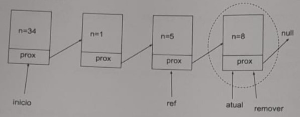

1) Considerando as operações de ordenação e busca em um array de objetos qualquer, podemos afirmar que:
i) É possível ordenar, pelo método bolha, esse conjunto de dados.
ii) É possível realizar busca pelo método binário, nesse conjunto de dados.
iii) É possível realizar busca somente pelo método binário, nesse conjunto de dados.
iv) Não é possível ordenar esse conjunto de dados.
2) Comparando lista ligada com array e considerando que os dois conjuntos estejam ordenados, podemos afirmar que:
3) Considere o seguinte trecho de código em Java. Ele se refere à alocação dinâmica de memória, isto é, alocação em tempo de execução:
Considerando que foram executadas as três instruções e que o garbage collector tenha atuação instantânea, é correto dizer que:
4) Considere o método de uma lista simplesmente ligada e que a referência atual marca o último nó desta lista:
A referência e do tipo Elemento, juntamente com o loop neste método realizam:
1) (3 pontos) O método pesquisar recebe um parâmetro do tipo int e realiza a busca linear (sequencial) em um array de objetos. Se achar o id, retorna o índice localizado, senão, retorna -1. Usando como base as informações da classe Array, implemente a lógica descrita para o método pesquisar.
2) (3 pontos) Dado o desenho que representa uma lista simplesmente ligada, faça o que se pede:

a) Escreva um método para realizar a contagem de todas as células em uma lista, com valor par de n. Considere que n é do tipo int e está encapsulado.
b) Escreva todas as instruções específicas (em Java) para remover a célula indicada no desenho acima (n=8). Não é necessário escrever o método!
c) Após a execução das instruções do item b, a célula foi instantaneamente removida da memória? Justifique.